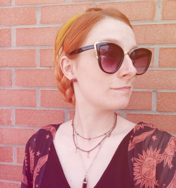
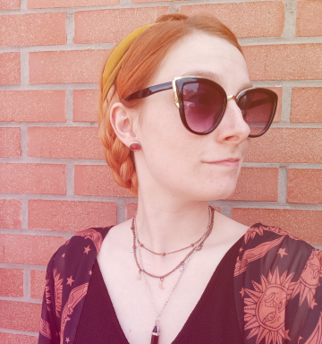

Having
fun !
A propos de moi
Qui suis-je ?
Graphiste et artiste 2D passionnée, j'aime travailler sur des projets qui ont du sens !
Curieuse et touche-à-tout, je porte plusieurs casquettes profesionnelles car je suis aussi ingénieur, formatrice, animatrice pour enfants ...
Ce qui relie tous ces univers ? Le sens, la créativité et la rigueur !
Mon parcours
- Depuis 2019 - Graphiste & artiste indépendante
- Je conseille et j'accompagne des clients variés à mettre en place une communication adaptée à leurs besoins : logos, charte graphique, supports de communication, site web, gestion des réseaux sociaux ...
- Depuis 2017 - Ingénieur chargée de projets chez Trézorium
- Gestion de projets, formation professionnelle, animation d'ateliers pour les enfants, graphisme ... J'y ai notamment eu l'occasion de créer le Lexique du nouveau monde commenté et illustré (Rédaction, mise en page, illustration, édition ...)
- Gestion de projets, formation professionnelle, animation d'ateliers pour les enfants, graphisme ... J'y ai notamment eu l'occasion de créer le Lexique du nouveau monde commenté et illustré (Rédaction, mise en page, illustration, édition ...)
- 2013 à 2018 - Formation d'ingénieur à Polytech Lille
- J’y ai appris la rigueur et la gestion de projet — des qualités que j’applique aujourd’hui dans mes missions de graphiste. C’est aussi là que j’ai commencé à explorer le graphisme, à travers mes engagements dans plusieurs clubs étudiants : création de logos et affiches.
- 2013 à 2018 - Animatrice pour enfants
- Une expérience humaine et créative qui nourrit encore aujourd'hui ma manière de travailler !
Ce que j'aime faire
- üñåÔ∏èCr√©er des univers visuels coh√©rents et cr√©atifs
- üñåÔ∏èIllustrer, peindre, bidouiller, exp√©rimenter
- üñåÔ∏èDonner vie √† des projets porteurs de sens